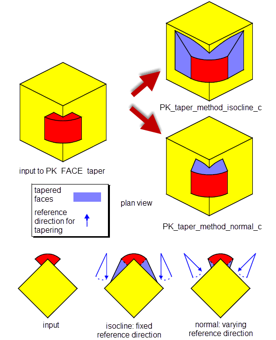
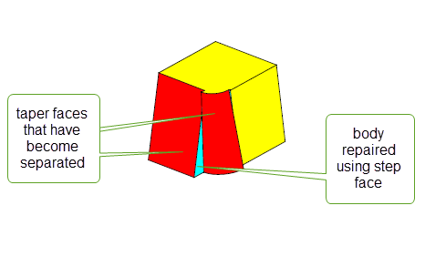

| |
Face Tapering |
| <<< Replacing The Surfaces Of Faces | Chapters | Body Tapering >>> |
This chapter describes how faces can be modified using tapering (often called drafting) when molding or casting a model part. Applying a taper (or adding draft) allows the part to be easily withdrawn from the mold as shown in Figure 67-1.
Figure 67-1 Removing a tapered and untapered part from a mold
Tapering is typically used to model parts for injection molding or casting, as it changes the angle of “steep” side surfaces, thereby allowing a part to be easily withdrawn from a mold.There are two stages involved in tapering a set of faces which are summarised here:
During both stages, the functionality requires a draw direction vector pointing into the mold and a draft angle.
For an example of this functionality, see the code example in the
C++\Code Examples\Modelling\LOP\Taper
folder located in
example_applications
in your Parasolid installation folder.
|
Note: This functionality partially supports facet geometry. See PK_FACE_taper for more information. |
During the analysis stage of the process, you can use either PK_FACE_imprint_cus_isoclin or PK_SURF_make_cus_isocline to create and imprint isocline curves on a set of faces or a given surface.The set of faces must all come from the same body. Typically some faces are split during this analysis phase.
If you are using facet geometry, the
mesh_normal_field
option provides control over imprinting isocline curves on a mesh. This option allows you to specify whether mvertex normals or mfacet normals are used to generate isocline curves on a mesh. Unlike classic surfaces, you can choose how to determine the normal associated with a point on a mesh. This can either be a mfacet normal or a mvertex normal. For more information on these mesh normals, see Section 89.3, “Mesh normals”.
The
mesh_normal_field
option has the following values:
The results of using either mvertex normals or mfacet normals to generate isocline curves are illustrated in Figure 67-2.

Figure 67-2 Creating isocline curves on meshes using mvertex normals or mfacet normals
Note: The
mesh_normal_field
option is not implemented for classic geometry. |
PK_FACE_imprint_cus_isoclin can also report whether the returned
ret_faces
are steep. Faces are deemed to be steep when, at all points, the face normal makes an angle with the draw direction which is greater than π/2 - taper angle, in radians.
PK_FACE_taper takes the following arguments:
|
The number of faces used in the taper operation and the faces themselves. |
|
|
The reference entities used in the taper operation. See Section 67.1.3, “Reference entities” for more information. |
|
|
A set of options to control the result of the tapering operation. See Section 67.2, “Summary of PK_FACE_taper options” for more information. |
PK_FACE_taper requires a reference entity from the
reference
argument for each face it tapers. The reference entity is used to define the taper surface. It can be one of the following:
|
The reference edge stays fixed while the other edges of the taper face are altered to perform the taper. If isocline curves are imprinted during the analysis phase, the resulting edges can be used as reference edges during the tapering phase. |
|
|
The taper face acquires the same taper surfaces as the reference face. See Section 67.1.3.4, “Example 3: Using an adjacent face as the reference entity” for an example. |
|
|
The intersection of the taper face with the reference surface stays fixed. |
If a face is used as a reference entity, it must appear in both the
faces
array and the
reference
array such that each face entry in the
faces
array maps to a single reference entity in the corresponding position in the
reference
array. Multiple references can be specified by duplicating the faces in the
faces
array.
Step tapering can be performed by passing a set of edges and surfaces as reference entities for a single face. See Section 67.4, “Step tapering” for more information.
The following examples are intended to illustrate the different aspects of this functionality.
In Figure 67-3: (a) the curved face has been analysed and split by two isocline curves into three faces, of which two need tapering; (b) shows the tapering stage complete and illustrates the isocline surfaces meeting the original face smoothly.
Figure 67-3 Splitting a single face and tapering two of the resulting faces
In Figure 67-4, both faces f0 and f1 require tapering. In this instance you may identify edges e0 and e1 as the reference entities that both retain their geometry after the taper is applied. In this example the taper surface for face f0 is a plane and for face f1 a ruled B-surface.
Figure 67-4 Selecting edges e0 and e1 as reference entities
In Figure 67-5 two faces (f0 and f1) need tapering to produce the result shown. To achieve this result, you need to specify f0 and f1 as the faces to be tapered. In addition, e0 should be specified as the reference entity for f0, and f0 should be specified as the reference entity for f1, which means that f1 acquires the same taper surface as f0. Figure 67-5 shows the effect of using this specification and, since f0 and f1 are adjacent, they are merged into one face.
Figure 67-5 Using an adjacent face as the reference entity
In Figure 67-6, three edges (e0,e1 and e2) are specified as reference edges for face f0. Tapering the body results in splitting f0 at the common vertex of e0 and e1 and at the common vertex of e1 and e2 into faces f0, f1 and f2. These three faces are then tapered appropriately.
Figure 67-6 Using reference edges to taper face f0
PK_FACE_taper contains a wide variety of options to let you control the result of the taper operation, The following table summarises the options available, full details of which are given in the rest of this chapter.
merge_face |
Whether tapered faces should be merged with their neighbouring faces. |
check_fa_fa |
Whether to check for face-face inconsistencies. Default: PK_check_fa_fa_yes_c |
tapered_edges normal_edges |
When performing step tapers, a list of edges that produce tapered step faces, and a list of edges that produce normal step faces. See Section 67.4, “Step tapering”, for more information. |
method |
Which taper method to use in the operation. Default: PK_taper_method_isocline_c See Section 67.3, “Taper methods” for more information. |
offset |
The offset distance used when |
top_surface |
The surface on which the reference edge’s curve is projected when performing offset tapering. See Section 67.3.3, “Offset tapering” for more information |
taper_smooth_step |
Whether to create step faces when you have a smooth boundary edge between a face which is to be tapered and a face that is not being tapered. See Section 67.4.2, “Automatic step tapering” for more information. Default: PK_taper_smooth_step_no_c |
taper_step_face |
Whether to create step faces between taper faces that have become disconnected as a result of the tapering operation. See Section 67.4.3, “Creating steps between taper faces” for more information. Default: PK_taper_step_face_no_c |
taper_faces n_faces |
A list of faces that are tapered using different taper angles for each face. See Section 67.5, “Specifying multiple angles” for more information. |
angles |
An array of angles that you want to apply to the faces listed in |
position |
How to process laminar edge boundaries. See Section 67.6, “Controlling laminar edges” for more information. Default: PK_taper_laminar_edge_normal_c |
grow |
Whether to grow faces when repairing face clashes. See Section 67.7, “Controlling the growth of overflowing faces” for more information. |
parting_edges n_parting_edges |
Edges used to create step faces from |
parting_body |
The body used to create step faces from |
update |
Update switch to maintain consistency when rebuilding models built in older version of Parasolid. See Section 63.5.2, “Update control”, for more information. Default: PK_local_ops_update_default_c |
Parasolid allows you to create a number of different types of tapers using the
method
field in the options structure for PK_FACE_taper.
This field can take the following values:
|
Isocline-based tapering is the default method. It calculates tapered faces with reference to the taper direction and the taper reference curve tangents. It fails if the taper condition is not satisfied. It is particularly suited to creating molds. See Section 67.3.1, “Isocline-based tapering” for more information. |
|
|
Curve-based tapering calculates tapered faces with reference to the taper direction, and the direction perpendicular to the taper direction, and the reference edge’s curve tangent. This method is particularly suited to aesthetic tapering. The taper condition does not need to be satisfied for this method to succeed. See Section 67.3.2, “Curve-based and surface-based tapering” for more information. |
|
|
Surface-based tapering calculates tapered faces with reference to the taper direction and the normal of the taper faces’ original surfaces. The taper condition does not need to be satisfied for this method to succeed. This method is particularly suited to aesthetic tapering. See Section 67.3.2, “Curve-based and surface-based tapering” for more information. |
|
|
Offsetting tapering calculates tapered faces by projecting the curve of the reference edge onto the top surface, such that the resulting curve appears offset from the reference edge curve when viewed from the taper direction. This method is useful when creating a tapered surface against a single curved top surface.See Section 67.3.3, “Offset tapering”for more information. |
|
|
Normal-to-surface tapering produces tapered surfaces similar to those created by the curve method, but here they are independent of the global taper direction. Instead, the draw direction varies according to the normal of the reference surface. This method is useful for creating a tapered surface that is independent of the global taper direction.See Section 67.3.4, “Normal-to-surface tapering” for more information. |
Isocline-based tapering lets you create tapered surfaces which satisfy the taper input condition: for all faces being tapered, the angle between the taper direction and the taper reference curve tangent must be greater or equal to the taper angle at all points along the curve. This is the default tapering method and has been described in previous sections.
Curve-based tapering lets you create tapered surfaces in cases where the taper condition is not satisfied (such as when the taper reference curve is in the same direction as the draw direction). It is particularly suited to aesthetic tapering.
Surface-based tapering also lets you create tapered surfaces in cases where the taper condition is not satisfied, using a different method of calculation. It is also particularly suited to aesthetic tapering.
Figure 67-7.shows examples of face tapering.
Figure 67-7 Creating surface- and curve-based tapers
Offset tapering lets you create tapered surfaces in which the curve of the reference edge is projected onto a single top surface, creating a new “offset curve” that appears offset from the curve of the reference edge when viewed from the direction of taper, as shown in Figure 67-8.
When producing this type of taper, you should use
top_surface
to specify the surface on which the reference edge’s curve is projected. It must be the surface of a face in the body, and should not be the surface of any taper face.
Figure 67-8 Creating an offset taper
Normal-to-surface tapering produces tapered surfaces that are not dependent on the draw direction but vary with the normal of a reference surface. This may be supplied as a reference entity (see Section 67.1.3, “Reference entities” for more information) or, where the reference entity is an edge, taken as the surface of the face adjacent to this reference edge. An example is shown in Figure 67-9, where the results are compared with those from the default taper method (PK_taper_method_isocline_c). The plan view shows that the normal-to-surface operation has constructed a tapered surface with a varying draw direction.
Figure 67-9 Creating a normal-to-surface taper
In step tapering, the taper is based on both a reference surface and a parting line of reference edges. The specified faces are tapered in the same way as in regular tapering, but, contrary to regular tapering, these faces are not split into new faces stemming from the reference edges. Any of the reference edges that do not lie in the reference surface produce a new step face which extends from the reference edge to the tapered face.
A typical example of step tapering is shown in Figure 67-10. The face to taper is marked f0, the reference surface is the plane marked s0 and the reference edges form the parting line. The taper direction is the upward vertical.
Figure 67-10 Partial step tapering
As in regular tapering, the reference edges, the intersections of the faces to taper and the reference surface, are kept fixed. The reference surface, though, does not have to intersect the faces to taper, as shown in Figure 67-11.
The reference surface may also split reference edges into new edges (as shown in Figure 67-12), leading to the creation of the new-edge associated step faces, or merge reference edges, as required by the taper operation.
Figure 67-12 Edges of the reference surface are split
The surfaces attached to the step faces created from reference edges during a step taper operation can be of two types:
tapered_edges
in the same manner as the main tapered surfaces, they therefore satisfy the taper condition.
normal_edges
. They do
not necessarily satisfy the taper condition.Figure 67-13 Step-tapered body with normal step face
When there is a smooth edge between a face to be tapered and a face that is not being tapered, you can use the
taper_smooth_step
option in PK_FACE_taper_o_t to automatically create a step face. This is illustrated in
Figure 67-14.
Figure 67-14 Automatic creation of step faces
|
Note: The step faces created using this option have normal surfaces attached, rather than tapered. See Section 67.4.1, “Step surfaces”, for more information. |
Sometimes, taper faces that are connected in the original body can become separated as a result of the taper operation. This occurs, for example, when smoothly connected faces are tapered using multiple angles, as described in Section 67.5, “Specifying multiple angles”.
You can use the
taper_step_face
option to control the creation of step faces between taper faces that get separated in this way.
Figure 67-15 shows a body on which two adjacent faces are tapered by different angles. Parasolid has created a step faces between the resulting tapered faces. Notice also that step faces have been created between each tapered face and any adjacent non-taper faces that are smoothly connected, as described in Section 67.4.2, “Automatic step tapering”.
Figure 67-15 Creating step faces between taper faces
The
taper_step_face
option takes the following values:
|
Do not create a step face between taper faces that are separated. Instead, Parasolid attempts to trim the taper faces appropriately. This is the default. |
|
|
Create a step face between taper faces that are separated during the taper operation. |
|
|
Step faces are created between any sharply connected faces that are separated, but Parasolid attempts to preserve the smooth boundary of any smoothly connected faces. If you use this value when tapering using multiple angles, you must ensure that any smoothly connected faces all have the same taper angle. See Section 67.5, “Specifying multiple angles” for more information. |
You can produce step faces from a parting sheet using the
parting_edges
and
parting_body
options in PK_FACE_taper.
Figure 67-16 shows the creation of step faces using the imprinted edges of a parting sheet. The
parting_edges
of the parting sheet are imprinted on the faces of the body that are to be tapered. Step faces are then created along these imprinted edges.
Figure 67-16 Creating step faces from a parting sheet
These options are also available in PK_FACE_change_taper_o_t. See Section 73.4.2, “Taper options”, for more information.
As well as tapering a set of faces using a single taper angle, you can taper multiple faces using multiple angles with the
taper_faces
and
angles
options.
The
taper_faces
option is an array of faces for which you want to specify multiple angles. The
angles
option is an array of angles that you want to apply to those faces. Each face in
taper_faces
should be unique, and should also be included in the list of
faces
passed to PK_FACE_taper. The
taper_faces
may consist of faces that are connected, either sharply or smoothly.
The
taper_faces
and
angles
specified are subject to the following restrictions:
angles
array.
taper_step_face
option is PK_taper_preserve_smooth_c (see Section 67.4.3, “Creating steps between taper faces”), then the same taper angle must be specified for all smoothly connected faces that are supplied in this list.Figure 67-17 shows some examples of bodies where several faces have been tapered using different angles.
Figure 67-17 Creating face tapers using multiple angles
Very often, specifying multiple taper angles causes adjacent tapered faces to become separated as a result of the taper operation. Parasolid can repair these separations by adding a step face automatically, and we strongly recommend that you use this functionality. Figure 67-18 shows an example in which four step faces need to be added to repair the body. See Section 67.4.3, “Creating steps between taper faces”, for information.
Figure 67-18 Repairing separated taper faces
You can control how the geometry attached to any laminar edges in a tapered face is created using the
position
option. This can have a significant effect on the shape of the resulting tapered body. The
position
option takes the following values:
Figure 67-19 shows how the result of a taper operation can be affected by using this option. In the illustration, a cylindrical face is tapered by a large angle using both methods. Using the default method, the tapered face is significantly shorter in the axis of the draw direction than using the alternative method. Using the alternative value, a tapered face with the same height as the cylindrical face is produced.

Figure 67-19 Controlling the position of laminar edges in tapered faces
When features with different convexities overflow each other as a result of tapering, you can control which of the clashing features is grown to heal the model using the
grow
option.
Figure 67-20 shows a simple example of the effects that you can achieve using this functionality.
Figure 67-20 Controlling the growth of overflowing features with different convexity
This option is available in a range of different functional areas, including local operations, hollowing, and thickening. For a full description, see Section 73.5.5, “Controlling the growth of overflowing faces”.
| <<< Replacing The Surfaces Of Faces | Chapters | Body Tapering >>> |